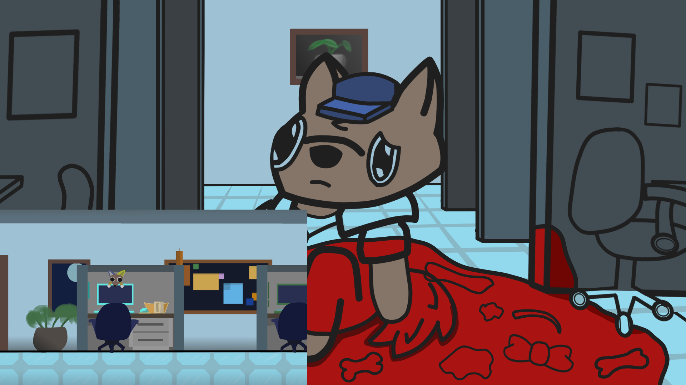
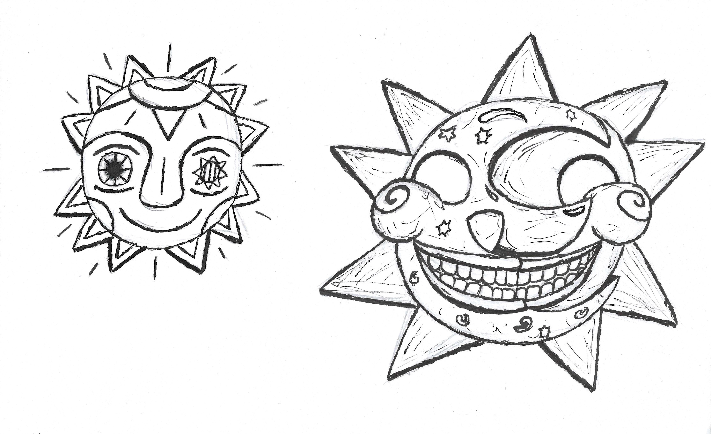
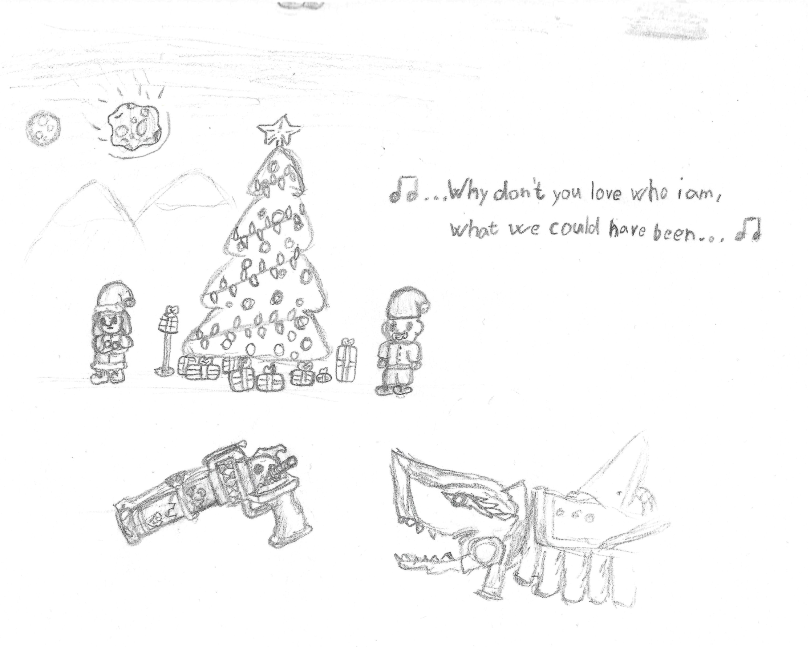
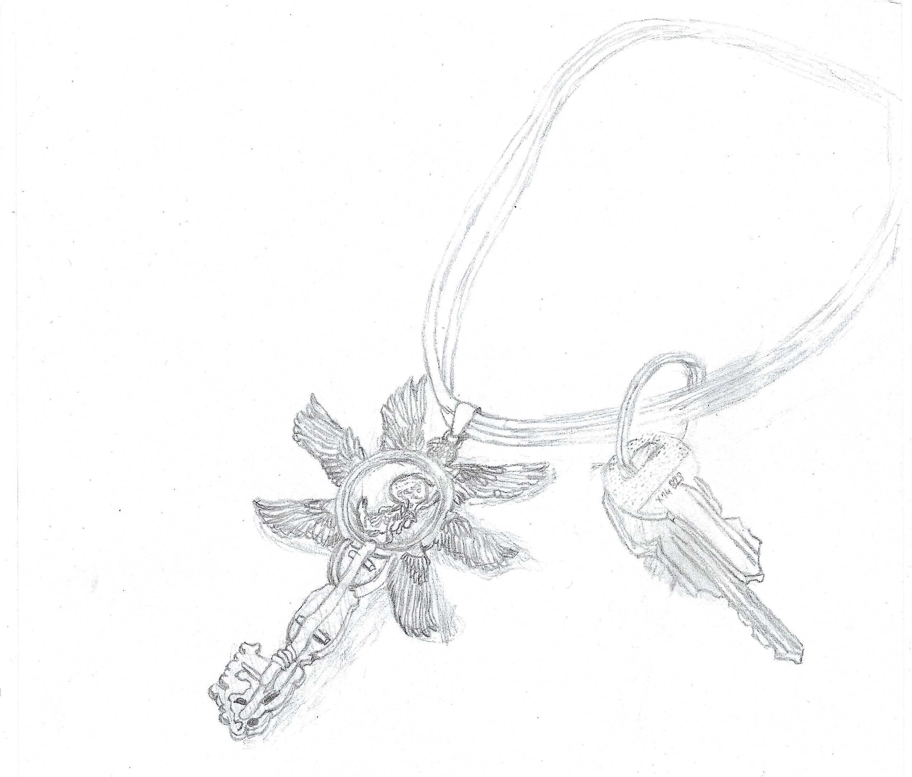
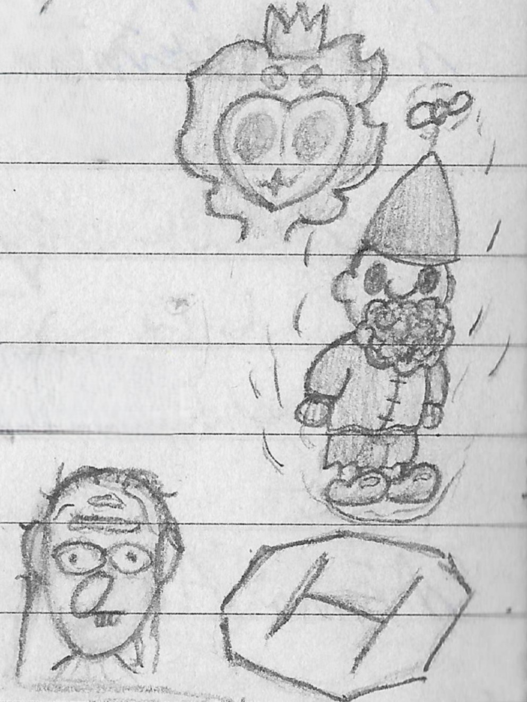
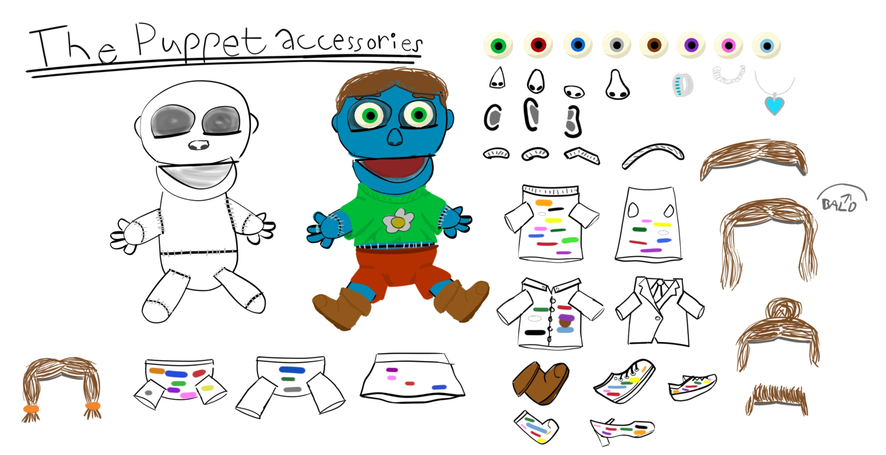
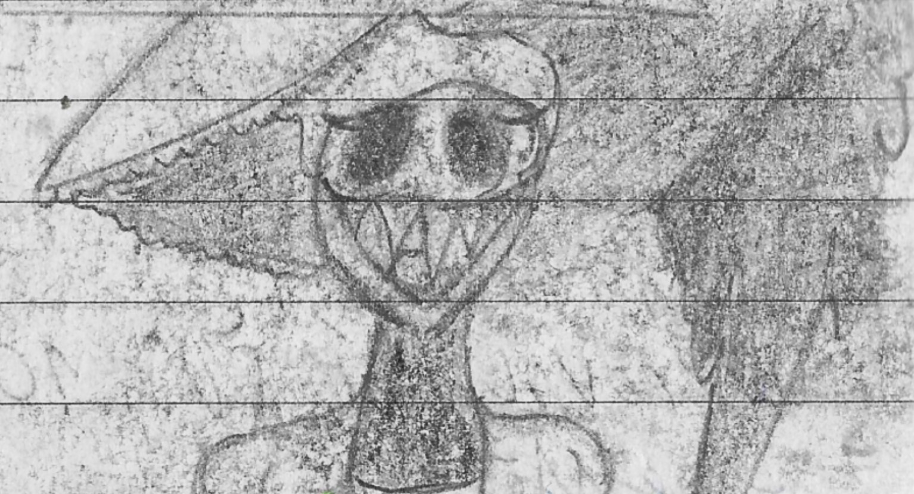
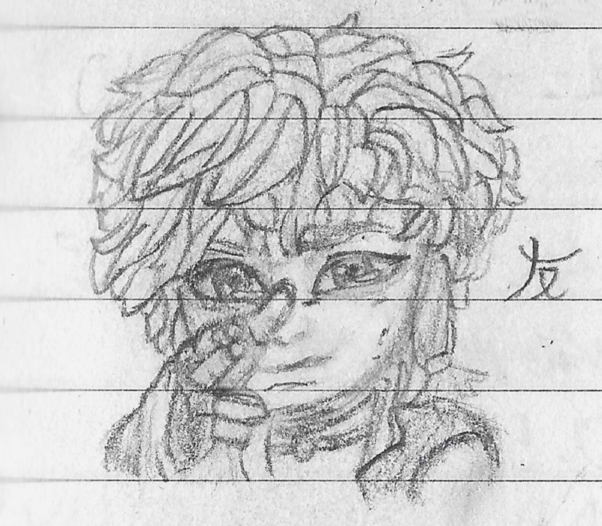

Drawing
Drawing is sort of in my family(I don't mean we're all good at it, but we enjoy doing it). I like drawing with pencil on paper
and I'm trying to draw on a Wacom tablet, but I'm still learning.
My sister will soon graduate from Hollarka and that motivates me a little to improve my drawing.
I'm not aiming for her level, but rather for stylized characters, etc. I often draw using a reference,
but then I try to do it without it with my own ideas.
In the summer of 2024 I created my first animation with the ToonBoom Harmony 21 software with the theme of the game called The Were Cleaner.







